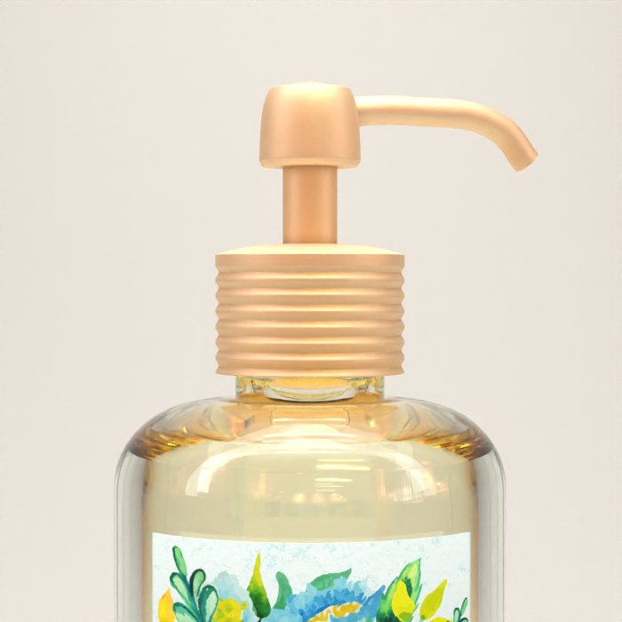

Study 82 · 4 November 2026
Secret Senses, real edges
Subdivided, then rougher. Lowering metallic only made plastic.


One change at a time



Study 82 · 4 November 2026
Subdivided, then rougher. Lowering metallic only made plastic.
